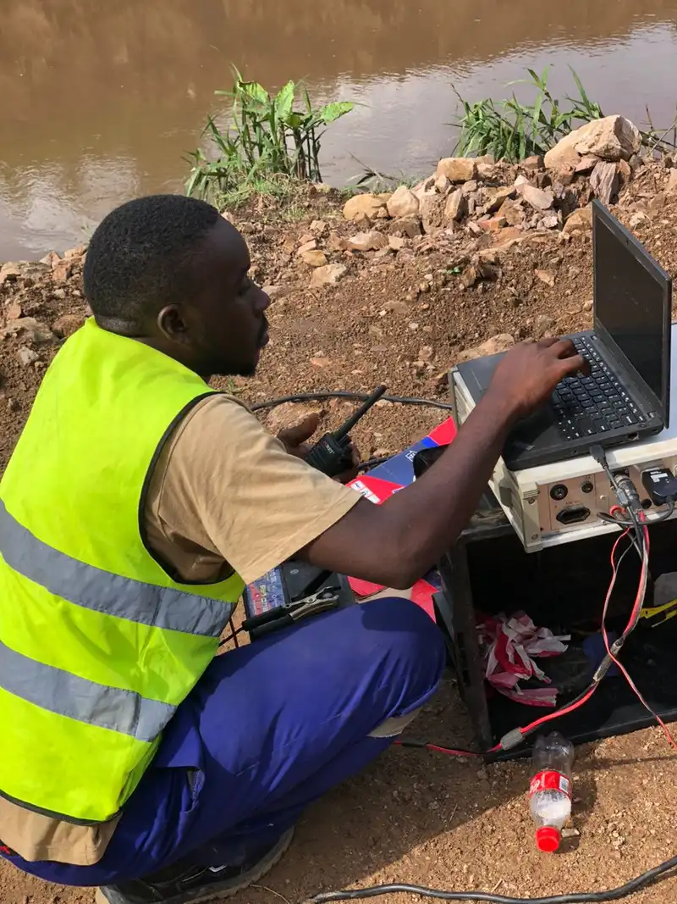

In-situ compressional (Vp) and shear (Vs) wave velocity profiling for Seismic Site Class, low-strain modulus, and foundation dynamic characterisation — the definitive method for dynamic soil properties on dams, buildings, and infrastructure across Uganda and East Africa.
A downhole seismic survey measures seismic wave velocities at depth inside a borehole. A triaxial geophone probe (measuring vertical and two horizontal components) is lowered down a borehole, and a seismic source — a sledgehammer struck on a horizontal plate or a weight drop — is triggered at the surface at a known offset and azimuth. By recording the arrival times of the compressional (P) and shear (S) waves at successive depths, Georesolve derives the in-situ Vp and Vs velocity profile of the ground.
A crosshole seismic survey measures seismic velocities between two or more boreholes. A source is fired in one borehole at known depths while geophones in an adjacent borehole record the arrivals. Because the wave travels horizontally between the holes, crosshole surveys provide high-resolution velocity tomography of the ground between boreholes — ideal for characterising foundation conditions and detecting anomalies within a specific depth interval.
These borehole seismic methods are the most reliable way to measure the dynamic properties of soil and rock. Georesolve Africa has delivered downhole seismic surveys for major infrastructure including the Standard Gauge Railway (SGR) corridor in Eastern Uganda and dam foundation investigations such as the MWOGO-RUKARARA Multipurpose Dam in Rwanda. The resulting Vs profiles are used to determine Seismic Site Class, compute the low-strain shear modulus, and assess liquefaction and dynamic foundation response.
| Component | Specification |
|---|---|
| Downhole probe | Triaxial (3-component) geophone probe with centraliser and clamp, measuring vertical, radial, and transverse motion for simultaneous Vp and Vs detection |
| Shear source | Sledgehammer and steel shear plate (horizontal polarisation) plus weight-drop source for deeper or noisier sites |
| Compressional source | Vertical hammer strike on a base plate for P-wave generation |
| Seismograph | Multi-channel engineering seismograph with high sample rate (kHz) for accurate first-arrival picking of both P and S waves |
| Cabling | Depth-marked geophone cable with winch for controlled, repeatable depth positioning |
| Crosshole kit | Downhole source (spark or mechanical) and receiver probes for tomography between adjacent boreholes, with survey horns for accurate depth control |
Determine Vs30 and assign Seismic Site Class (A–E) for building code compliance (Eurocode 8 / Ugandan regulations).
Compute low-strain shear modulus Gmax and Poisson's ratio for foundation and earthquake engineering.
Use Vs profiles to evaluate liquefaction susceptibility of sandy soils for seismic design.
Characterise foundation dynamic response, zoning, and treatment depth for dams and embankments.
High-resolution imaging of velocity anomalies between boreholes for foundation and landslide studies.
Dynamic site characterisation for railways, bridges, and highways including the SGR corridor.

Georesolve delivered a comprehensive geotechnical investigation for the MWOGO-RUKARARA Multipurpose Dam, including downhole seismic surveys for in-situ Vp and Vs profiling. The borehole seismic data characterised the dynamic properties of the foundation materials, supporting seismic site classification and dynamic response analysis of the dam.
The downhole velocity profiles were integrated with borehole logging, SPT, and laboratory testing to define foundation zoning, treatment depth, and seismic design parameters for this multipurpose water infrastructure project in the Ruhango District of Rwanda.
A downhole seismic survey measures seismic wave velocities at depth inside a borehole. A geophone is lowered down a borehole and a seismic source (sledgehammer or weight drop) is triggered at the surface at a known offset. By measuring the arrival time of the wave at successive depths, the seismic velocity profile of the subsurface is derived. It is one of the most reliable methods for measuring in-situ shear-wave (Vs) and compressional-wave (Vp) velocities.
A crosshole seismic survey measures seismic velocities between two or more boreholes. A source is fired in one borehole at known depths while geophones in an adjacent borehole record the arrivals. Because the wave travels horizontally between holes, crosshole surveys provide high-resolution velocity tomography of the ground between boreholes — ideal for characterising foundation conditions and detecting anomalies within a specific depth interval.
Shear-wave velocity (Vs) is the primary parameter for evaluating the dynamic behaviour of soil and rock. It is used to determine Seismic Site Class (Vs30), compute the low-strain shear modulus (Gmax) for earthquake engineering, assess liquefaction susceptibility, and characterise foundation stiffness. Because shear waves do not travel through water, Vs is sensitive to the soil/rock skeleton rather than pore fluid — making it far more diagnostic than compressional velocity alone.
Vs30 is the average shear-wave velocity in the uppermost 30 metres of the ground. It is the standard parameter used by building codes (including Eurocode 8 and the Ugandan building regulations) to assign a Seismic Site Class — typically classes A (hard rock) through E (soft soil). Downhole seismic surveys are the direct method for measuring the Vs profile from which Vs30 and site class are computed.
A downhole seismic survey can profile to the full depth of the borehole — commonly 30 to 100 metres for geotechnical investigations, and deeper for dam or mining projects. The method requires a borehole of sufficient quality (cased or open-hole) and good coupling. Crosshole surveys require two or more boreholes spaced 5 to 30 metres apart, depending on the target depth and resolution.
The cost of a downhole or crosshole seismic survey depends on borehole depth, number of boreholes, source type, and the level of processing and interpretation. These surveys are typically performed in conjunction with geotechnical boring or drilling campaigns. Georesolve Africa provides tailored quotes integrated with your drilling programme. Contact us for a detailed proposal.
Talk to Georesolve Africa about downhole or crosshole seismic surveys for your dam, building, or infrastructure project in Uganda and East Africa.
Request a Quote